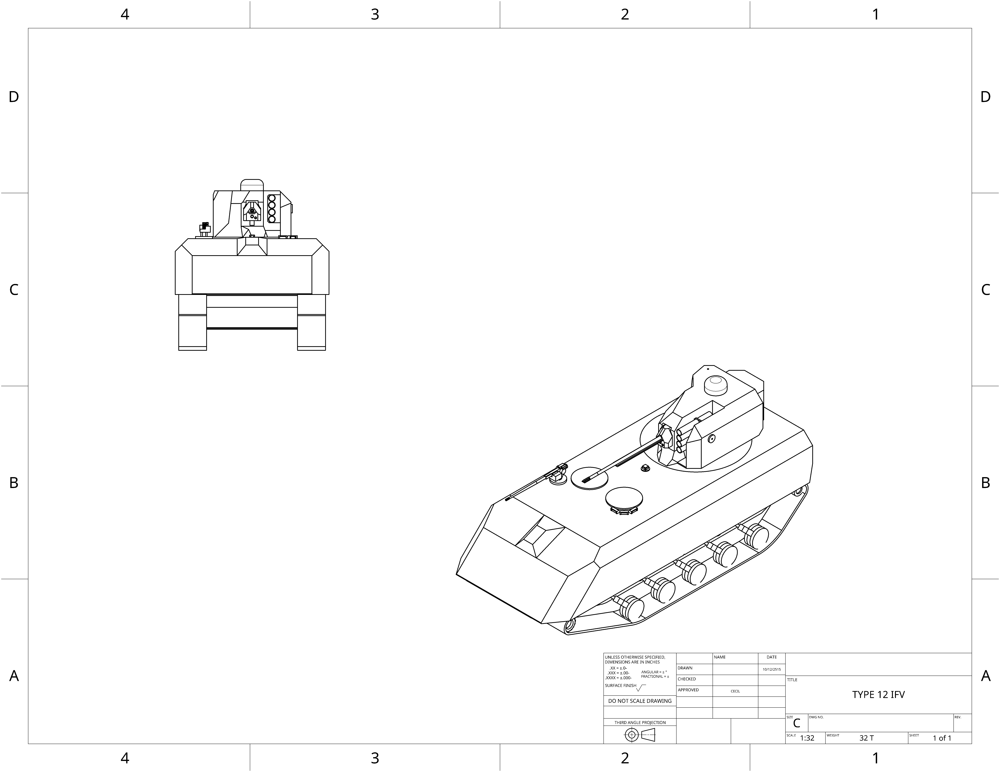

home
UCSC IFV:
UCSC infantry fighting vehicle, is armed with a multiple launch precesion drone launcher to protect infantry from enemy aircraft as well
as a 25mm autocannon and .50 caliber machine gun.

- Main armament: UCSC 25mm chaingun(Sabot, EMPHE)
- Secondary armerment:UCSC 120mm drone pod(x8 Drones, x8 Surface To Air missiles)
- Secondary armerment: 6.5mm coaxial mount
- Secondary armerment: .50 Hull mount
- Shielding capabilities: X0.5 GiggaJoules
- Auxillary capabilities: x8 Ground to air drones, x4 120 HEEMP loitering munitions, Improved radar arrays
- Armor(Hull): Front-400mm,Sides-100mm,Back-60mm
- Speed: 125 Kph Forward 125 Kph Back
- Tonnage: 32 Metric tons